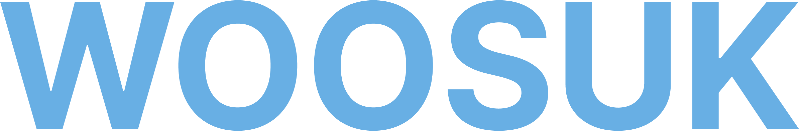
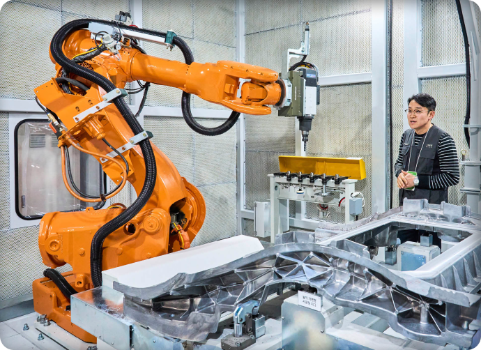
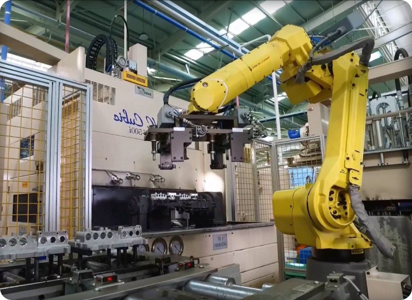
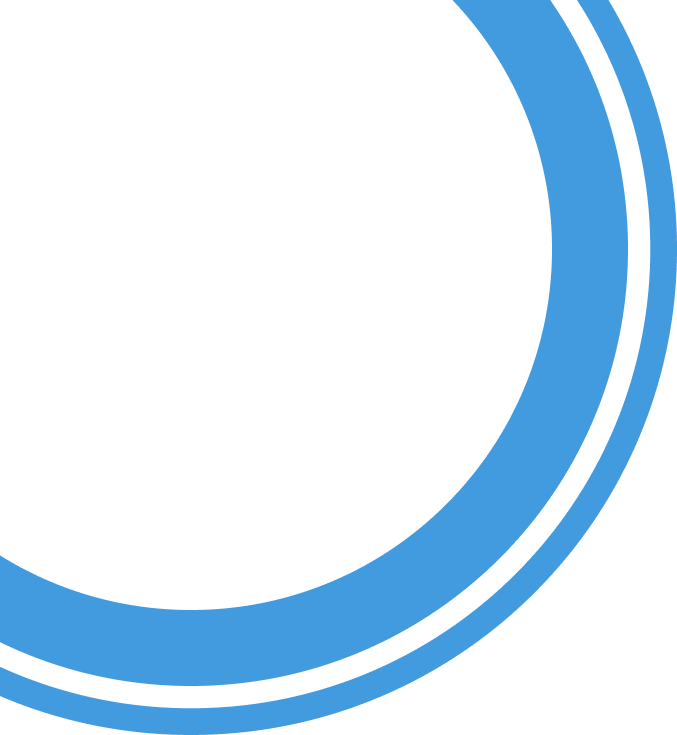
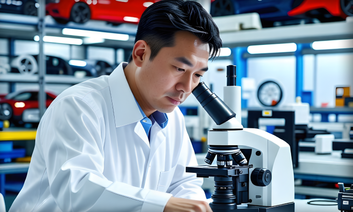
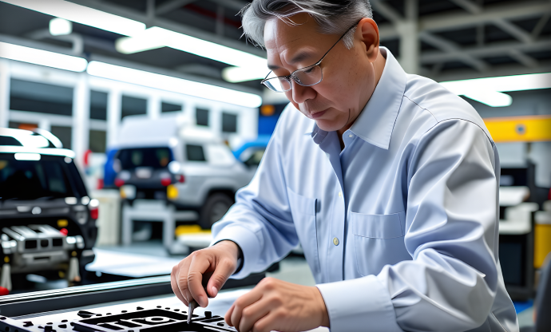

신뢰와 혁신으로 완성하는 자동차 부품, 최첨단 기술과 엄격한
품질 관리를 통해 자동차 부품의 새로운 기준을 제시합니다.

정밀한 자동화 시스템과 효율적인 생산 라인을 통해, 품질과
생산성을 극대화하며 고객의 요구에 완벽하게 부응합니다.




우석엔지니어링은 혁신적인 기술과 지속적인 연구·개발을 통해 자동차 부품의 품질과 성능을 극대화하며 고객의 안전과 편의를 최우선으로 생각합니다.

미래의 이동 수단을 선도하는 스마트한 솔루션을 제공합니다. 끊임없는 도전과 창의적인 사고로, 더 나은 내일을 만들어가는 우석엔지니어링이 되겠습니다.